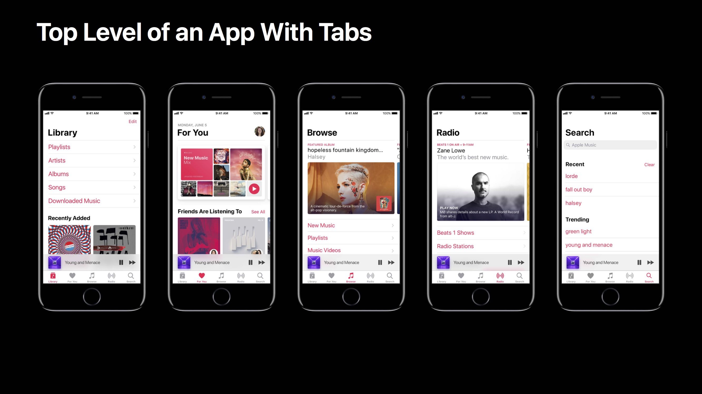

从导向、排版层级、对比度三个方面介绍 iOS 11 设计上的一些变化，从而帮助你设计一个具有丰富的视觉层级、清晰的导航、易于使用和简单的交互的 app。
概述
- Wayfinding：在 iOS 11 中提供更加清晰的导航、贯彻整个系统的导向；
- Typographic Hierarchy：通过排版的调整，聚焦整体的层级；
- Contrast：对于有用的信息，在 UI 上增加对比度。
Wayfinding 导向
- 通常意义下，导向就是指导人们通过某个环境、在物理空间自我定位；
生活中常见的标识和信息系统：街道标识、机场、停车场。
在 UI 中导向，可以增强使用体验，理解你所处的空间：
- 首要目标：高亮/强调内容；
- app 需要清晰的视觉层级；
- UI 元素不应该与内容发生竞争，而应该帮助你更好的理解潜在的功能和交互。
大标题导航栏：一种可选的方案，并没有替换掉标准的导航栏样式，页面往下滚动时可以切换为标准的导航栏样式；
在哪里应该使用大标题导航栏：
- app 每个 tab 的第一层级：让你理解你在 tab 的第一层级、你已经滚动到了页面顶部；
- 如果内容和层级众多，在某些二级页面也可以使用大标题导航栏，例如「音乐」app 中「浏览」tab 中的「最新音乐」、「歌单」、「排行榜」；

- 在布局相似的页面里也可使用大标题导航栏，例如「电话」app，每个 tab （个人收藏、最近通话、语音信箱）都是行式的文本内容，使用大标题导航栏可以让用户立即知道自己在哪里；
- 非常重要：在导航栏中使用大标题并不总是必要的，在某些场景下会阻碍其可用性，例如「时钟」app，虽然它有多个 tab，但是它没有复杂多样的内容，每一个 tab 的布局也十分容易区分，如果使用大标题导航栏，反而会使其与内容发生竞争。
Typographic Hierarchy 排版层级
- 通过排版上的层级变化，可以强调更加重要的内容，帮助内容成组；
- 减少认知负担，减少在寻找某些东西时所付出的精神努力。
- 建立排版层级的几个基本的方法：
- Position 位置：上面的会比下面的重要一些；
- Size 尺寸/字号：大尺寸的会比小尺寸的重要一些；
- Weight 字重：粗字重可以强调效果，细字重可以减弱效果；
- Color 颜色：如白色对比灰色，白色会有强调效果。
- 一次可能会用到多种方法。

iOS 11 中的几个实例：
- 「照片」app：内容——你的照片是这个 app 中最重要的。导航照片的每部分的标题，在 iOS 10 中采用了两种字号来区分两种信息，但仍然显得有点小、有点轻，而在 iOS 11 中，让每部分的标题字号更大，地点信息增加了字重，日期信息采用了灰色文本。这些改变可以使你分离内容中的重点更简单了，让你更快地找到某张特别的照片。

- 「日历」app：在 iOS 11 中为了强调增加了字重，有意地使用颜色指示当前的年月日。

- 「天气」app：在 iOS 11 中，增加了文本字重，整体上增大了字号，使得内容更加容易阅读。

Contrast 对比度
- 在 UI 中，为了与更大、更粗的文本样式保持平衡，需要更新其他 UI 元素，增强其对比度，同时还要保持其功能性，保证最小化粒度的改变。
在 iOS 11 中由此带来的一些改变：
- 填充按钮的形状，如数字键盘；

- 增加形状的尺寸，如搜索输入框；
- Tab Bar：增加文本标签的字重（从 regular 到 medium），填充 icon 的形状、增加笔画的权重；
- IPhone 横屏下的 Tab Bar：第一点，为了对空间更好地利用，把文本标签放在了 icon 的右边（iOS 10 中是一上一下），这样使得横屏下的 Tab Bar 更矮了，从而与导航栏、工具栏高度一致。第二点，相对于竖屏，横屏下的 icon 会稍小一些，文本会稍大一些，设计自己的 app 时需要考虑这些因素。

- iPad 横屏下的 Tab Bar：更大的文本尺寸、icon 与竖屏时的大小一致。
- Wallet app：在 iOS 10 中使用了模糊效果，似乎想要表明其位于底下的页面之上，但这个并不符合逻辑，也没有起到指示所处空间的作用，所以在 iOS 11 中移除了这种模糊效果。
移除多余的、不必要的 UI 元素，减少复杂度以改善整个 app 的对比度。
参考链接
如果你觉得这篇文章对你有所帮助，欢迎请我喝杯咖啡，感谢你的支持😁